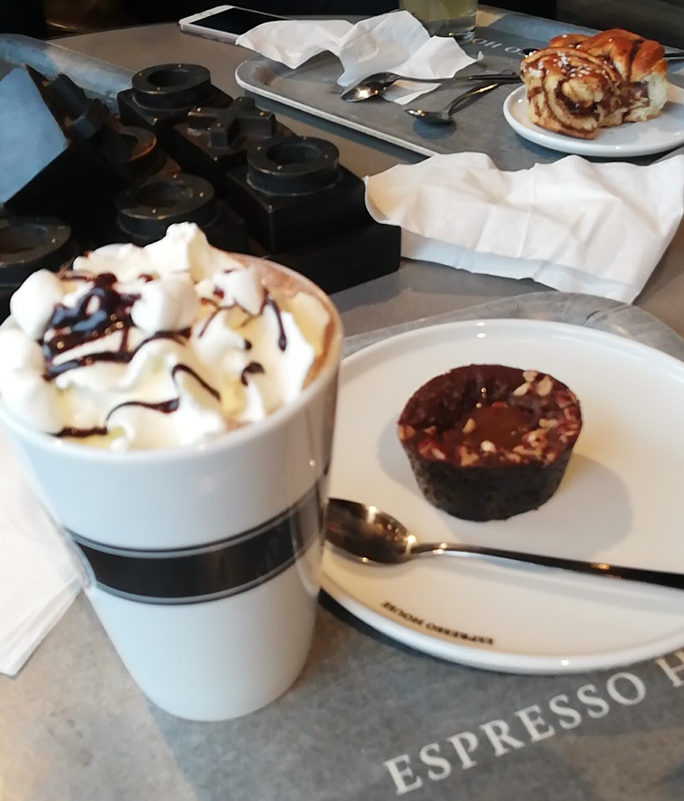
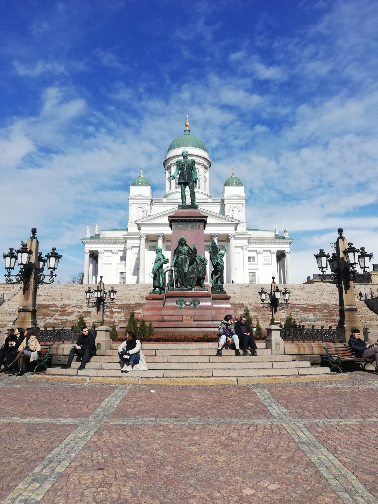
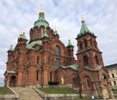
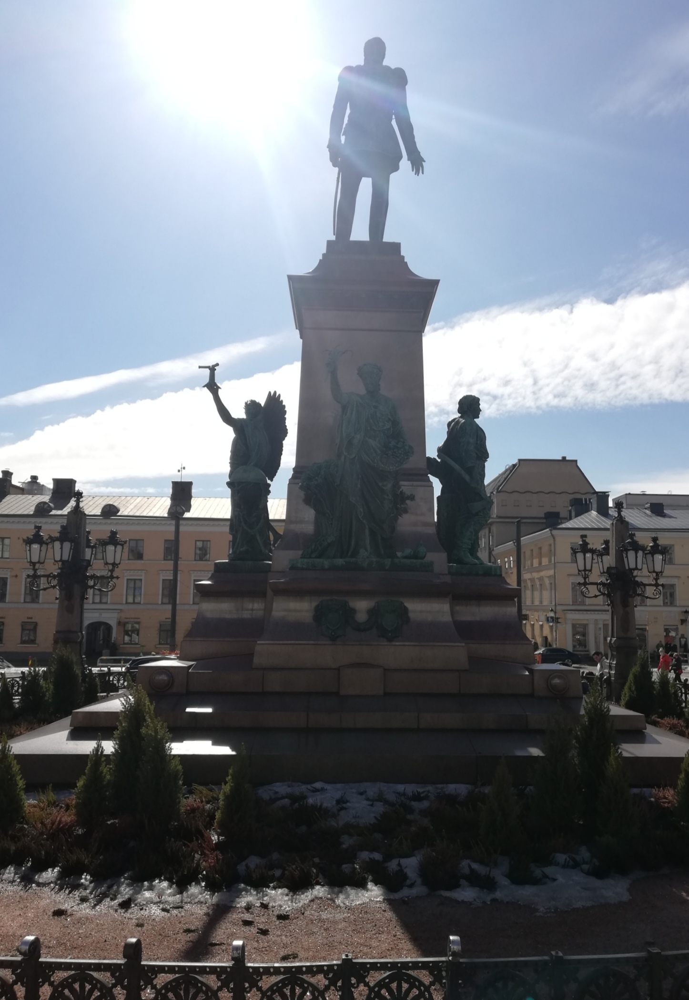
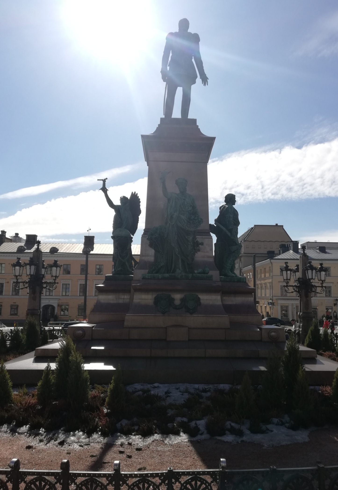
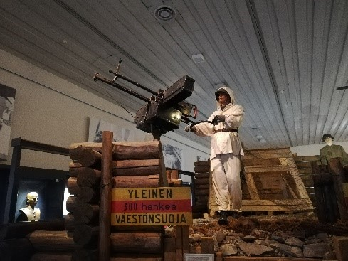

The weekend of April 9 I went to Helsinki and visited the city and an island with a well-known fortress.
I was able to visit Helsinki because my brothers (Gauthier who is doing his Erasmus in Riga and my older brother) came to Finland!
So, we met at the Helsinki train station before taking a break (yes already) in a café in front of the station.
 yummy">
So, we visited the city by simply going to the highest buildings.
And it's a very good strategy! So, we saw the Helsinki Lutheran Cathedral.
Then the Ouspenski Cathedral. We walked a lot in the city, and we saw many buildings (without really knowing what they were) and many statues in the city.
We also went to two museums, one of which was about the history of the city, In the museum, what struck me most was a large collection of photographs.
These photos were preserved by the museum, and they are black and white photos from the time, and these photos showed the everyday life of the Finns. I found it very interesting.
The city is rather pretty even if rather modern.


 
For lunch on this first day of our visit we stopped in a covered market where we could taste a typical Finnish salmon soup which was delicious!
I highly recommend it even if everything is more expensive than in France! By the way, I'm about to do an article on food in Finland, and it's an important subject.

For lunch on this first day of our visit we stopped in a covered market where we could taste a typical Finnish salmon soup which was delicious!
I highly recommend it even if everything is more expensive than in France! By the way, I'm about to do an article on food in Finland, and it's an important subject.
On the second day we visited an island with the fortress.
On the island there is a museum about the history of the Finnish army that I found very interesting!
I was able to learn more about the global history of Finland with its neighbours notably Sweden, Russia and Germany which was often its ally for the latter.
I admit that I don't retain much information on the history because it is not the part that fascinates me the most.
Once again, I only remembered that a French king rebuilt the fortress of Suomenlinna.

The information I remember the most is that Helsinki was named capital of Finland by Russia, instead of Turku.
Because Turku was considered too close to Sweden. And also, because the Finns wanted it, in fact the Finns were more sentimentally close to Helsinki than to Turku.
Then I learned that Finland became independent in 1917 during a revolution between the White Army (Finnish independence fighters) and the Red Army (pro-Russian).
Finnish independence is now celebrated by a public holiday on 6 December with parades in the streets.
If we want to make a geographical comparison of Helsinki with our capital in France Helsinki’s number of inhabitants is 650,100 compared with Paris, there are 2.161 million inhabitants.
That's it for my trip to Helsinki, I'm planning to visit Tempere and Turku soon so expect more reviews from me on Finnish cities!